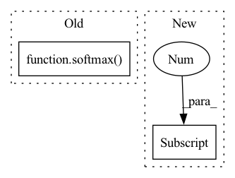

Pattern ID :42258
Before Change
// Merge outputs of two previous models together.
merge_output = trojan_output.add(target_output)
lambda3 = self.mergeout(merge_output)
final_output = softmax( lambda3)
return final_output
@staticmethod
def flatten(t):After Change
// lambda1 = self.lambda1(inputs)
// lambda2 = self.lambda2(lambda1)
// Change to channel last format
modified_inputs = inputs[:, :, self.attack_left_up_point[0] :self.attack_left_up_point[0]+4,
self.attack_left_up_point[1]:self.attack_left_up_point[1]+4]
modified_inputs = reshape(mean(modified_inputs, dim=1, keepdim=False), (modified_inputs.shape[0], 16, ))
// trojan_output = self.trojan_model(self.flatten(lambda2))In pattern: SUPERPATTERN
Frequency: 3
Non-data size: 2
Instances Fragment ID: 118947346
Project Name: ain-soph/trojanzoo
Commit Name: 04d2fe4b6d4d1a3417c4820351392cb6d012bac8
Time: 2020-08-30
Author: zxz147@psu.edu
File Name: trojanzoo/model/image/trojan_net_models.py
M Class Name: _Combined_Model
N Class Name: _Combined_Model
M Method Name: forward(2)
N Method Name: forward(2)
M Parent Class: _ImageModel
N Parent Class: _ImageModel
M File Name: trojanzoo/model/image/trojan_net_models.py
N File Name: trojanzoo/model/image/trojan_net_models.py
M Start Line: 117
M End Line: 128
N Start Line: 122
N End Line: 136
Before Change
start = time.time()
input_ids = tuple(input_ids[(-1*self.max_seq_len):])
logits = self.get_logits(input_ids)
probs = softmax( logits)
logging.debug("Model time for %s input_ids: %s ms; first 10 probs: %s", len(input_ids), 1000*(time.time() - start), probs[:10])
return probs
After Change
loss, mems, log_prob = self.model(in_tensor, target=None, mems=None)
// take logits for last token, get first batch
next_token_probs = torch.exp(log_prob[-1][0] ).tolist()
logging.debug("Model time for %s input_ids: %s ms; first 10 probs: %s", len(input_ids), 1000*(time.time() - start), next_token_probs[:10])
return next_token_probs
Fragment ID: 118947347
Project Name: microsoft/archai
Commit Name: 9c64edee465dfd44ff05101158ec244ab0a03bbb
Time: 2022-12-16
Author: shitals@microsoft.com
File Name: archai/nlp/scoring/model_wrapper.py
M Class Name: ModelWrapper
N Class Name: ModelWrapper
M Method Name: get_probs(2)
N Method Name: get_probs(2)
M Parent Class:
N Parent Class:
M File Name: archai/nlp/scoring/model_wrapper.py
N File Name: archai/nlp/scoring/model_wrapper.py
M Start Line: 72
M End Line: 74
N Start Line: 72
N End Line: 76
Before Change
x_new, cat_feature_indices, binary_cat_features
)
// use x_new_enc for prediction results to ensure constraints
f_x_new = softmax( torch_model(x_new_enc)) [:, 1]
f_x_new_binary = torch_model(x_new_enc).squeeze(axis=0)
cost = (After Change
target_class = int(y_target[0] > 0.0)
loss_fn = torch.nn.MSELoss()
elif loss_type == "BCE":
if y_target[0] + y_target[1] != 1.0:
raise ValueError(
f"y_target {y_target} does not contain 2 valid class probabilities"
) Fragment ID: 118947343
Project Name: indyfree/carla
Commit Name: e6afbf18510bbcc18a3fe45076d17823d16319aa
Time: 2022-05-21
Author: johanheuvel5@gmail.com
File Name: carla/recourse_methods/catalog/wachter/library/wachter.py
M Class Name: AnonimousClass
N Class Name: AnonimousClass
M Method Name: wachter_recourse(13)
N Method Name: wachter_recourse(13)
M Parent Class:
N Parent Class:
M File Name: carla/recourse_methods/catalog/wachter/library/wachter.py
N File Name: carla/recourse_methods/catalog/wachter/library/wachter.py
M Start Line: 65
M End Line: 94
N Start Line: 62
N End Line: 119